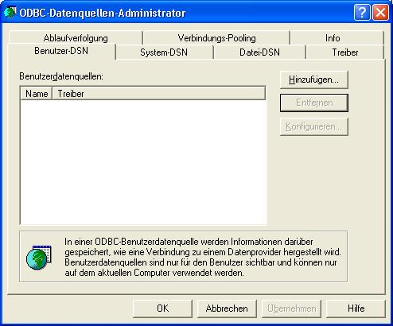
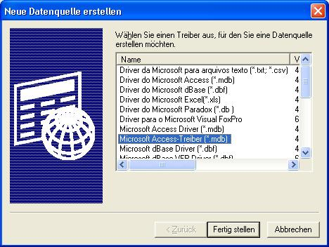
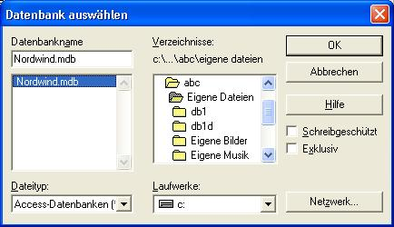
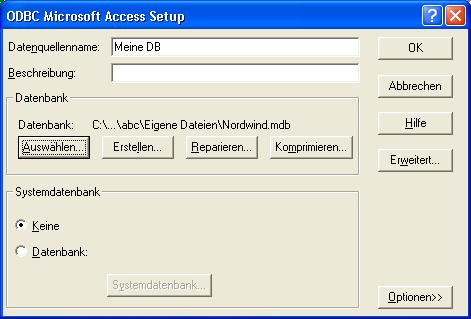

Suchen Sie mit dem Explorer die MS-Beispieldatenbank "Nordwind". Es kann sein, dass diese nicht installiert ist.
Merken Sie sich den Pfad zur Datei Nordwind.mdb
Nun muss eine DSN eingestellt werden. Dies ist einfach gesagt ein Alias für die Datenbank, um bei einer Änderderung der Position der Datenbank auf der Festplatte nicht alle Programme, die darauf zugreifen ändern zu müssen, muss dann nur noch der Alias geändert werden.
Dazu muss der OBDC-Manager geöffnet werden. Dieser befindet sich bei den verschiedenen Betriebssystemen an folgenden Stellen:
Win2000, WinXP
Explorer -> Systemsteuerung -> Verwaltung -> Datenquellen (ODBC)
Win95, Win98, WinMe
Systemsteuerung -> ODBC-Verwaltung

Nun auf "Hinzufügen.." klicken.

"Microsoft Access Treiber" auswählen und auf "Fertigstellen" drücken.

Jetzt muss noch der von vorhin gemerkte Pfad zu der Datei "Nordwind.mdb" eingestellt werden.

Einen Namen für die Datenbank bei Datenquellenname eingeben. Dieser ist ab jetzt der Name, mit dem man auf die Datenbank zugreifen kann.
Auf "OK" drücken. Fertig.